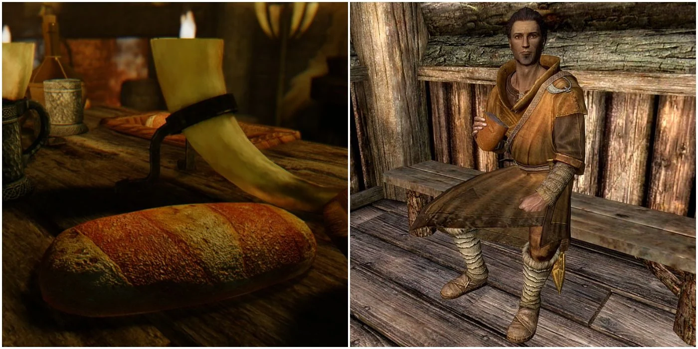

Bread
Mainpage

It’s no exaggeration to say that bread is the backbone of food in Skyrim, providing nourishment to anyone from adventurers to children at home.
Bread can be used as part of a meal, such as with Elsweyr Fondue, or is delightful on its own with some fresh butter or a dollop of honey.
The smell alone of a hearty, crusty loaf can warm the heart of even a draugr, and this simple recipe will teach you how to make fine bread fit for a Jarl’s table.
Ingredients
- 200g white bread flour
- 300g wholemeal/other brown bread flour
- 2 tsp baker’s yeast
- Pinch of salt
- 1 tbsp sugar
- 100ml fresh whole milk
- 200ml water
- 1 tbsp butter
- 1 beaten egg
Steps
- Combine dry ingredients in a large mixing bowl and make a well in the centre. Heat the milk, butter, and water together until warm, then stir into the dry ingredients.
- Knead by hand for roughly 10 minutes until the dough is smooth and stretchy.
- Shape dough into a ball and place it in an oiled bowl, cover with plastic wrap, and rest it in a warm place for 1.5 hours or until dough has doubled in size.
- Dust your work surface with flour and knead dough for 2 minutes. Mould your dough into a loaf shape and place in a bread tin for 1 hour, or until dough has once again doubled in size.
- Preheat your oven to 200C/400F.
- Brush your loaf with the beaten egg to glaze and bake for 15 minutes. Remove from oven and create 3 scores across the top with a knife, and place it back in the oven for an additional 15-20 minutes or until golden brown. Another way to check if your loaf is ready is by tapping it- it is ready if it sounds hollow.
- Cool loaf for 10 minutes before turning it out to cool, and wait until completely cool before slicing.